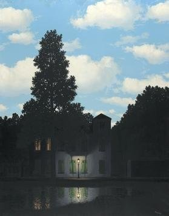

The Empire of Light
René Magritte · 1954 · Oil on canvas · 146 × 114 cm · Royal Museums of Fine Arts of Belgium, Brussels
In copyright. Look and learn: shown for study, not for download.
Magritte returned to this subject 27 times, in 17 oil paintings and 10 gouaches, between the 1940s and the 1960s, without planning them as a series. A version shown at the 1954 Venice Biennale drew several collectors who each hoped to buy it, so that year he painted several more large versions, this canvas of 146 by 114 centimetres among them. Another of the 1954 versions sold at Christie's in New York in November 2024 for $121.16 million, a record for the artist.